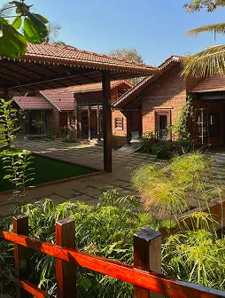
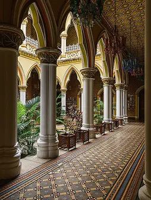
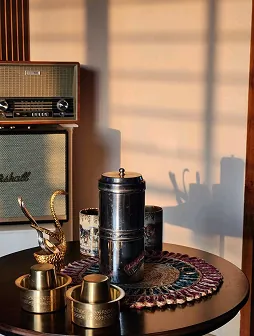
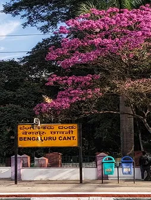
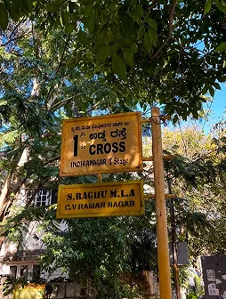

People are traveling to Bangalore from all over India and from much
farther away. We appreciate you making the journey to get here, and
we’ve tried to make the rest as easy as possible.
Getting to Bangalore
Fly into Kempegowda International Airport (BLR),
Bangalore’s main airport.
The wedding will be at The Tharavadu Mane in
Yelahanka, north Bangalore. It’s outside the main city, so
give yourself some extra time when traveling to and from the venue:
Bangalore traffic is reliably bad and can cause some delays.
Uber is widely used in Bangalore for ridesharing. For the wedding
celebrations, we’ll arrange transportation between the main
guest hotels and the venue, so you won’t need to figure that
part out yourself.
Where to stay
We’re happy to take care of your accommodation near the venue
for the nights of February 19, 20, and 21.
If you’d like us to arrange a room for you, just let us know
when you RSVP. We’ll share more details about the hotels and
rooms as we get closer to the date.
Visas
If you’re traveling to India on a foreign passport, you may
need an e-Tourist Visa. You can find more information and apply
through the
official Indian e-Visa website.
Please apply well in advance. It generally takes roughly two weeks
from the time of application to receive your visa, though
processing times can vary.
A few practical things
February is one of the nicest times to be in Bangalore, with warm
days and cooler evenings. Credit cards are widely accepted, though
it’s useful to carry some Indian rupees for smaller
purchases. Uber/auto-rickshaws are the easiest ways to get around.
If you have any questions about travel, accommodation, or the
wedding, just reach out to us. We’re happy to help with more
information or travel ideas for you to spend your time here!